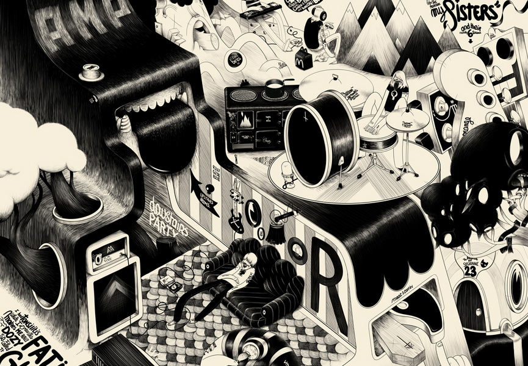
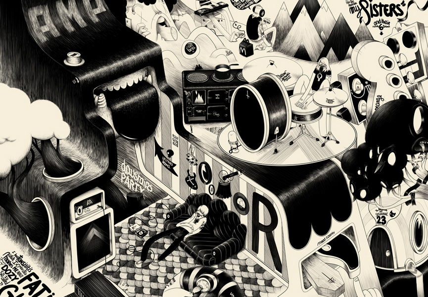

This is a shader that mimics the hatching art style.
The style was created along with the printing press, because there were only two values. Black and white.
To create shading the artist needed to draw parallel lines to create the illusion of grey.
When creating this shader I wanted to convey this in a way that was as accurate as possible,
so in the gif above the only colours you see are black and white..

Another one of my goals was that the shader was very easily tweakable.
By adding sliders and variables I made it possible to create a lot of different looking materials by just changing around some values.
one of these values that turned out to be very important was the 'frequency' variable.
This changed how many lines were drawn on an object, which made it possible to set an object at a distance and still have it look nice.
If you start researching hatching shaders you will notice that a large problem with these shaders is
that the direction of the lines never really seems to make sense except for when a hatching texture has been placed on the model correctly using UVs.
I wanted it to work without texturing. To do this I needed to find a way to store the direction the lines should follow into the mesh.
I wrote a Blender script that takes the direction of the bones of a rigged mesh and stores the direction in the vertices.
This direction can than easily be translated into the correct hatching direction.

 

I created a scene that I had based on a drawing of an artist known for using the hatching art style.
The scene isn't quite complete, because there's a lot of stuff in there. But the idea is there.
The piece I used as reference is a piece by the Artist McBess.
Of course since this was a graduation work,
I also documented all of my research in a paper which you can check out right here if you are just as interested in shaders as I am.
Documentation of the Blender tool and the calculations of the shader can all be found there.
Download Paper